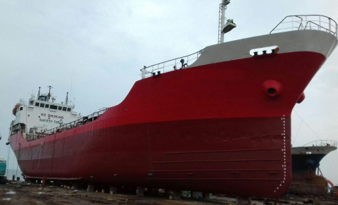

vesselWW
/ TANKER
/ 9009815 ACHILLES CAESAR
2,414 DWT 1,513 GRT Chemical Tanker Blt 1990 Jp
/ informed by BNC SHIPBROKING CO., LTD.

- TYPE : IMO 2&3 type Double Hull Chemical Tanker
- BUILT : 1990 blt in Miura Shipbuilding Co., Ltd, Japan
- FLAG/CLASS : Indonesia / BKI (EX-NK)
- LOA/L/B/D : 77.3 / 72.0 / 12.5 / 5.82 M
- DWT/draft : abt 2,414 DWT on 5.143M (Summer draft)
- GRT/NRT/LDT : 1,513 / 580 tons / 1020.96MT
- MAIN ENGINE : AKASAKA 2,200 BHP X 1set
- BOILER : MIURA VWN-3000WE, KS-17-06
- SPEED : MAX 13.4 KNOTS (240 RPM)
- CARGO TANK CAPA. : 10 TANKS, TOTAL 2,177 m³, EPOXY COATED
/ 2,005.682 m³ (98%, excluding slop tank C)
- SLOP TANK CAPA. : 131.364 m³ (98%)
- CARGO PUMP : TAIKO KIKAI, GEAR TYPE 300 m³/hr X 2set
- HEATING COIL : STAINLESS STEEL / MAX TEMP 80 DEG. C (LOADED) & 70 DEG. C
- HULL/BOTTOM : DOUBLE / DOUBLE
- CREW COMPLEMENT : 12 P
- LAST SS/DD : JUNE 2, 2016
- LOCATION : TRADING IN BANDAR LAMPUNG, INDONESIA
Information History
- 180830 : She is available for sale.